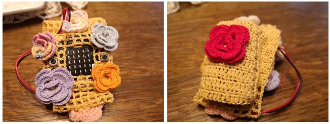
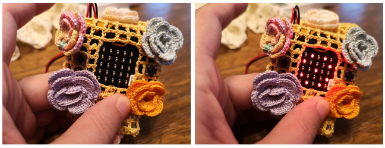

Projektni zadatak - Narukvica¶
Na kraju drugog razreda jedne osnovne škole učenici predstavljaju roditeljima sve ono što su naučili tokom drugog razreda. Tokom priredbe nekoliko učenika treba da ima na rukama narukvice koje bi pomjeranjem ruku “izbacivale” cvjetiće.
Narukvica koja “izbacuje” cvjetiće može da se napravi upotrebom Micro:bit uređaja, tako što će uključivanje i isključivanje led dioda simulirati “izbacivanje” cvjetića kada korisnik pomjeri ruku.
Za izradu narukvice potrebno je:
1 Micro:bit
Tkanina ili kolaž papir
Makaze
Ljepljiva traka/Konac
Potrebno je programirati Micro:bit-a da ima ulogu da kada korisnik protrese uređaj na displeju (5x5 led diodama) se prikazuje cvjetić.
Korak 1
Idite na https://makecode.microbit.org/.
Želimo da isprogramiramo da se na displeju Micro:bit-a prikaže cvjetić kada je napravljen neki pokret, tačnije želimo da pomoću Micro:bit-a registrujemo bilo kakvo pomeranje korištenjem akcelerometra na Micro:bit-u. Samo kada se detektuje pokret na displeju se prikazuje željena sličica (uključivanjem led dioda).
Za rješavanje ovog problema koristimo blok grananja sa uslovom da je pokret napravljen. Kojа će linija (grana) koda biti izаbrаnа, zаvisi od ispunjenog uslovа, ako je registrovan pokret, na Micro:bit-u će biti prikazana cvijet, а ako nije led diode neće biti uključene.
Korak 2
Pokreni novi projekat i u blok  , nalazi se u kategoriji
, nalazi se u kategoriji  , prevuci blok
, prevuci blok  iz kategorije
iz kategorije  .
.
U bloku forever blokovi u okviru njega se ponavljaju sve dok se Micro:bit ne isključi.
U dijelu za uslov  prevucite blok
prevucite blok  (nalazi se u kategoriji
(nalazi se u kategoriji  ).
).
Iz padajuće liste bloka :

izaberite opciju  . Ova opcija registruje pokrete.
. Ova opcija registruje pokrete.

Na osnovu postavke problema, kada je registrovan pokret (odnosno u našem slučaju kada je uslov ispunjen), na Micro:bit-u će biti prikazan cvijet. Potrebno je unutar grane (uslov ispunjen, ili grane DA) prevući blokove za prikaz cvijeta (uključivanje željenih led dioda) iz kategorije Basic:

Za prikazivanje cvjetića koristićemo tri bloka show leds koji će se koristiti za prikaz željene slike cvijeta.
Izgled programa kada je pokret napravljen:

Na osnovu postavljenog problema, postoji i uslov da kada nema pokreta na displeju Micro:bita ne treba da bude prikazano ništa. Da bi smo to postigli potrebno je da dodamo granu u kojoj će se izvršavati blokovi kada uslov nije ispunjen (u našem slučaju kada nema pokreta), klikom na znak  . U okviru te grane postavljamo blok za brisanje displeja Microbita
. U okviru te grane postavljamo blok za brisanje displeja Microbita  .
.
Konačni izgled koda narukvice:

Simulacija:

Korak 3
Klikom na dugme  ili dugme
ili dugme  preuzmite .hex fajl na vaš računar. Prevlačenjem fajla na Micro:bit on je spreman za rad.
preuzmite .hex fajl na vaš računar. Prevlačenjem fajla na Micro:bit on je spreman za rad.
Kada je Micro:bit isprogramiran, potrebno ga je samo smjestiti u već napravljeno kućište za narukvicu i početi sa upotrebom.
Narukvica:
